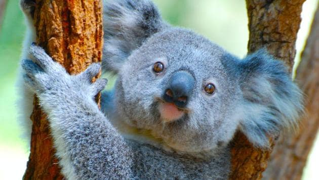

Wildlife Of Australia
About
The fauna of Australia consists of a huge variety of animals; some 83% of mammals, 89% of reptiles, 90% of fish and insects and 93% of amphibians that inhabit the continent are endemic to Australia
1.Koala
The koala or, inaccurately, koala bear, is an arboreal herbivorous marsupial native to Australia. It is the only extant representative of the family Phascolarctidae and its closest living relatives are the wombats, which are members of the family Vombatidae
2.Kangaroo

The kangaroo is a marsupial from the family Macropodidae. In common use the term is used to describe the largest species from this family, the red kangaroo, as well as the antilopine kangaroo, eastern grey kangaroo, and western grey kangaroo. Kangaroos are indigenous to Australia and New Guinea